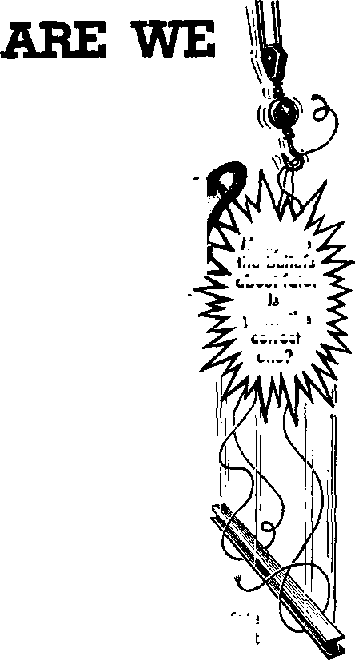

Are We Victims of Fate?
Did Men Live a Million Years Ago?
PAGE 9
Big Business in Crime
PAGE 12
Fathers, Enjoy Your Children
OCTOBER 22, 1962
THE MISSION OF THIS JOURNAl
Ntw» lOurcM that art able to keep you awake to thji vital Ittuti of our time* must be unfettered by censorship and selfish interests. ‘‘Awake!” has no fetters. It recognizes facts, faces facts, is free to publish facts. It Is not bound by political ambitions or obligations; It Is unhampered by advertisers whose toes must not be trodden on; it is unprejudiced by traditional creeds. This journal keeps itself free that it moy speak freely to you. But it does not abuse its freedom. It maintains integrity to truth.
"Awake!" uses the regular news channels, but is not dependent on them. Its awn correspondents are on all continents, in scores of notions. From the four corners af the earth their uncensored, on-the-scenes reports come to you through these columns. This journal's viewpoint is not narrow, but is international. It is read in many nations, in many languages, by persons of all ages. Through its pages many fields of knowledge pass In review—government, commerce, religion, history, geography, science, social conditions, natural wonders—why, its coverage is as broad as the earth and as high as the heavens.
"Awake!" pledges itself to righteous principles, to exposing hidden foes and subtle dangers, to championing freedom for all, to comforting mourners and strengthening those disheartened by the failures of a delinquent world, reflecting sure hope for the establishment of a righteous New World.
Get acquainted with "Awake!” Keep awake by reading "Awake!”
PUBLISHED SIltULTANEOUSLT IN THE UNITED STATES BY THE WATCHTOWER BIBLE AND TRACT SOCIETY OF NEW YORK, INC. 117 Adams Street Brooklyn 1. N.Y., U.S.A.
and in England by WATCH TOWER BIBLE AND TRACT SOCIETY
Watch Tower House, The Ridgeway London N.W. 7, England
N. H. Knorr, President Grant Suiter, Secretary
Printing this issue: 3,650,000 4d
"Awake!” Ii published i> the fol lew lap 23 langiigii: Semimonthly—AfrJkmi, Ctnyatija, Danish, Dutch, English, Finnish, French, German, Greek, lUHan, Japanese, Norwegian. rurtuguchB, Spanl'li, Swedish. Tcgaloe, Zulu. Monthly—Cebu-Vfsayan, Chinese. Ilocano. Korean, Malayalam, Polish, Tamil, Ukrainian.
m copy (Australia, 5d; South Africa, 3|/2c) Remittances for subscrlptlona should be eent to the office "tn your country. Otherwise send your remi.tiance to London. Notice of expiration is sent at least two Ldtsites before subscription expires.
Yearly subacri ptinn rates
Offices for semimonthly editlutia
America, U.S., 11,7 Adams St.. Brooklyn L, N.Y. $1
Australia, 11 Bedford Rd,, Strath field. N.S.W. 8/-Canada, 150 Rridgeland An.1., Toi onto Out $1
England, Watch Tower House,
The Ridgeway, Ixmilcm N.W. 7 7/-
New Zealand, 621 Now North Rd., Auckland, 8.W. 1 7/-
SQUth Africa, Private Bag, Elaudsfontefn, Tvl, 70c
Monthly editions cost half the above rates.
CHANGES OF ADDRESS shield reach us thirty days before your moving date. Give is your old and new address (If possible, your old address label!. Write Watch Tower, Watch Tower House. The Ridgeway, London N.W. 7, England,
Entered as second-class matter at Brooklyn, NX Printed In England
The Bible translation u«d In “Awakef’1 Is the
New World Translation of the Holy Scrlpteru, 1961 edition.
|
When other translations arc used the following symbols will appear behind the citations: | |||||
|
AS |
— American Standard Ver-iion |
Du |
- Catholic Doirny version |
Mo |
- James Moffatt's verafon |
|
AT |
- An AmvrlcAtl Translation |
ED |
- The Em; hate Diaglott |
Ro |
-J. B. Rotherham's version |
|
AV |
- Authorised Version (1611) |
JP |
- Jewish PubLluatjun Sec. |
HS |
- Revised Standard Verdlon |
|
Da |
- J. N. Darby's version |
Le |
- Jsiiae Leeuer'g version |
- Robert Vounjt's version | |
CONTENTS
A Time to Be Clever, a Time to Be Kind 3
Did Men Lave a Million Years Ago?
“Compac” Links Australia and
El Huwipunja—Remains of Colonialism in Ecuador
"Your Word Is Truth”
‘The Rest of the Dead Come to Life' 2
Volume XL111 . London, England, October 22, 11362 Number 20
LONG ago a wise king wrote: “For everything there is an appointed time, even a time for every affair under the heavens: ... a time to break down and a time to build; a time to weep and a time to laugh; a time to wail and a time to skip about.” And, it may be added: A time to be clever and a time to be kind.—Eccl. 3:1, 3, 4.
In this modern hurried age kindness is often crowded out, if not by greed then by thoughtlessness. Yet how much happiness even a little kindness can bring! Especially is it the time for kindness when there is need for an encouraging word, a helping hand or the proverbial "cup of cold water.” He who is kind heeds Jesus’ words: “Just as you want men to do to you, do the same way to them.”—Matt. 10:42; Luke 6:31.
Instead of being kind, the tendency today is to be clever. Of course, the word “clever” has various connotations. Certain beasts of prey are spoken of as being especially clever, such as the coyote and the wolverine. An ingenious toy, tool, gadget or trap may be said to be clever. The quick response, the witty reply are also said to be clever. Clever, however, is a word of but limited praise. Thus if you wanted to compliment a lawyer, rather than telling him he had been clever you would use such expressions as resourceful, skillful or astute.
It should be noted that one of the definitions for “clever” given by Webster’s Third New International Dictionary is, “Intelligent, quick, ingenious, and resourceful but lacking in depth, soundness, wisdom, or morality.” A clever lawyer may well be a tricky one, even as tricks are the stock in trade of the clever magician. Cleverness also often manifests itself by what is called, in modern American idiom, “wisecracks” or smart remarks.
Because of this, cleverness is often given an unfavorable connotation. As Rudyard Kipling once asked: “It’s clever, but is it art?” And as another English writer years ago counseled young ladies: “Be good, sweet maid, and let who will be clever." Thus it has also been observed that time and again a “clever mist of words” serves to hide the lack of knowledge on the part of a speaker or writer.
In human relations cleverness might be likened to spice, not very substantial as food but still helpful to make things interesting. If used sparingly, at the right time or occasion, and, of course, without malice, there can be no objection to it.
However, when it becomes one s marie or identification, then Invariably it betrays lack of “depth, soundness, wisdom and morality.”
Illustrating this fact is the life of the French writer and infidel, Voltaire, who, while active in fighting political oppression and religious bigotry, at the same time was famed for his clever wit. The Encyclopaedia Britannica, therefore, felt obliged to say about him, among other things: “His characteristic is for the most part an almost superhuman cleverness rather than positive genius., . . His great fault was an inveterate superficiality.... He was inordinately vain, totally unscrupulous in gaining money, in attacking an enemy, or in protecting himself when threatened with danger.” According to another encyclopedic authority, Voltaire “was a libertine; he lied without scruple.”
He especially liked to use his cleverness on the Bible, distorting its record and magnifying the weaknesses of its characters. To this end he borrowed heavily from the English deists, whom he plagiarized, falsified, misquoted and miscredited—all typical of his unscrupulous methods.
Though usually credited with that famed epitome of tolerance: “I disapprove of what you say, but I will defend to the death your right to say it,” the fact is that it was not made by him. But typical of his clever but shallow philosophy is his statement: “Clever tyrants never are punished.” Of course, all tyrants as well as all other deliberate wrongdoers like to think that they are clever enough to escape punishment. But how many of them, from Hitler on down, have found out by bitter experience that Voltaire's philosophy was not sound! In fact, his own experience proved him false. He was a tyrant with the pen, and because of his unbridled and indiscriminate and unprincipled cleverness he was repeatedly set upon and beaten, sued, imprisoned, ostracized and at times exiled.
While there was only one Voltaire, he does have disciples or imitators among those gifted with a quick, sharp wit. Such, however, will do well to remember that there is a time and place for cleverness, but the temptation is to indulge it constantly for the petty triumphs it gives; that is not the way to win the hearts of others. Such a one might consider the words of Cowper in his poem “Friendship,” which might be paraphrased:
‘The man who’s clever as can be will seldom scruple to make free with friendship’s finest feelings, will thrust a dagger at your breast and tell you 'twas a special jest by way of balm for healing.’
Among others who would do well to curb their cleverness is the practical joker. Often he is not nearly so bright as he thinks he is. As Solomon long ago wrote: “Just like someone mad that is shooting fiery missiles, ... so is the man that has tricked his fellow man and has said: ‘Was I not having fun?’ ”—Prov. 26:18, 19.
Clever is also what the modern youth often aspires to be, especially toward his parents and other elders, thereby betraying a glaring lack of respect, and usually as little sense. To note a recent true-life incident: When a ten-year-old was asked by an elderly guest, “Is that your dog?” the lad replied, “What did you think it was, a fish or a horse?” That was not the time nor the way to be clever. It showed lack of wisdom on the part of the boy.
Yes, there is a time for everything: A time to be clever and a time to be kind; a time to be clever and a time to be serious; a time to be clever and a time to be respectful. Wise and happy is he who knows when it is the time for each!
VICTIMS
about fate.
Is
correct
one?
fate
decreed him to be a victim that day?
automobile accident, is he a victim of fate? When a person dies, is it because
A 5,000-pound steel beam recently fell seventeen stories from a building under con-struction in New York city, killing a man passing by. Was it fate? When a marriage goes bad, does it have to be that way? When a child turn's out to be a delinquent, was it fate that made it that way? When a driver has an
Many are
the beliefs
yours the
To many persons the word “fate” means more than final outcome. This is evident from the many expressions one hears, such as: “It had to be this way.” "It was in the stars,” “Fate decreed it that way.” “It was his unavoidable fate.” “His time had come.” "Whatever will be will be.” Many persons who speak this way believe that one’s actions are so controlled by other forces, such as the stars or a supernatural force, that the course of one’s existence is determined for a person beforehand.
Some believe that it is primarily the time of death that is determined by fate. Because of such beliefs a soldier goes into battle with the belief that he will not meet his death a moment sooner than if he had stayed at home. Or a driver may drive his car overly fast, believing that he will not meet his end until his time is up. Still others believe that God is partial and that he predetermines certain individuals to get everlasting life, and that other persons have no hope no matter what they do.
What is the origin of these many views regarding fate? They find their origin in ancient pagan religions, such as that practiced by the stargazing Babylonians. They believed that their star gods more or less predestinated their lives. The ancient Greeks had a mythological belief in three sisters, Clotho, Lachesis and Atropos, These goddesses were supposed to control the destinies of gods and men, Clotho held the distaff and spun the thread, Lachesis rolled up the thread on the spindle and Atropos mercilessly cut the thread, which was supposed to measure the life of every mortal person. The Romans took over this belief and called their own fate goddesses Nona, Decuma and Morta.
What, now, does the Holy Bible show about the incidents in a person’s life? What does it disclose as to one’s destiny?
The Holy Bible shows that man was created a free moral agent; he can choose to do good or to do bad. Man will reap whatever he sows. The apostle Paul states this divine principle: “Whatever a man is sowing, this he will also reap; because he who is sowing with a view to his flesh will reap corruption from his flesh, but he who is sowing with a view to the spirit will reap everlasting life from the spirit. So let us not give up in doing what is fine, for in due season we shall reap if we do not tire out.”—Gal. 6:7-9.
Here the Bible shows that what we reap is not the result of some blind fate, some force over which we have no control; but we reap what we have sown. Trees and plants each have seed according to their kind; what is sown will result in the production of something of the same family kind. So it is with us. It may take time, and there may be a long period between sowing and reaping; but in time each person will be shown up by what he has sown. God is not to be mocked. We cannot violate this principle and do bad things and then expect to avoid reaping the bad results. If we do what is in harmony with God’s Word, if we cultivate the fruitage of his holy spirit and obey his commandments, then the result will be everlasting life in his new world.
Since we reap what we sow, it should be evident that we are responsible for the results of many things. Blind fate does not decide. A marriage does not have to go bad. If the marriage partners truly live by the principles given in the Bible, they have every reason for their marriage to be a successful one. Children do not need to turn out delinquent. Christians know that the Bible rule is: "Foolishness is tied up with the heart of a boy; the rod of discipline is what will remove it far from him.” (Prov. 22:15) So when parents violate this rule and do not bring up their children “in the discipline and authoritative advice of Jehovah,” then what can they expect but that their children will turn out delinquent?—Eph. 6:4.
Most auto accidents do not have to happen. Usually someone fails to abide by a law that has been set down by the community as necessary for safe driving. Or it may be just carelessness. People do not have to walk in front of trucks and be killed. They can stop and look both ways before they cross a street. When a person fails to look and is struck by a vehicle, it is not fate that brought about the disaster but carelessness.
But what about the person killed in New York city when a steel beam fell seventeen stories? It could have been carelessness by workers in the building; or it could have been an unforeseen occurrence, something breaking. The time element also enters the picture. The man happened to be at a particular spot when the beam fell. The beam would have fallen whether the man was standing below or not. But the man just happened to be there at the time the beam fell.
Similarly a person can be standing at a curb, waiting to cross a street. A car in which the steering mechanism suddenly became defective strikes and kills the pedestrian. It was not the fault of the person, nor perhaps of the driver, who may have had no way of knowing the mechanism was near the breaking point.
When a tower in Jesus’ day fell, killing eighteen persons, the Son of God did not ascribe it to fate nor did he say it was because they were more wicked than others. Some may have been very good persons. "Those eighteen upon whom the tower in Siloam fell, thereby killing them, do you imagine that they were proved greater debtors than all other men inhabiting Jerusalem? No, indeed, I tell you.” Jesus thus shows that such an accident is not because of fate but rather is more in harmony with what the Bible calls “time and unforeseen occurrence.”—Luke 13:4, 5.
Every one of us is subject to "time and unforeseen occurrence. ” This includes good persons as well as bad ones. It affects.those who are most accomplished or skilled in their particular endeavors. Thus the inspired writer says: “I returned to see under the sun that the swift do not have the race, nor the mighty ones the battle, nor do the wise also have the food, nor do the understanding ones also have the riches, nor do even those having knowledge have the favor; because time and unforeseen occurrence befall them all.”—Eccl, 9:11.
Generally the race is won by the swift; but not always. The fastest runner may step on a stone and be thrown off balance at a critical moment, and a much slower runner might win the race. Or the swiftest runner might happen to be “out of trim” on a certain day. Time and unforeseen occurrence may thus affect the final result. The persons killed by the falling tower in Jesus’ day and the man killed in New York city by the falling beam were not victims of a fate that decreed it had to be that way. It was simply “time and unforeseen occurrence,” that which ‘befalls them all.’
In God’s new world, under the reign of the King Jesus Christ, obedient mankind will reach perfection. Then there will not be so much unforeseen occurrence. There will be perfection of judgment. Not only that, but there will be the direct blessing of God. He has promised that he will directly intervene, such as in the case of the wild animal creation. Many wild creatures might injure or kill man today; but in the new T^orld it will not be so, for God has declared: “I shall certainly conclude a covenant in that day in connection with the wild besfst of the field and with the flying creature of the heavens and the creeping thing of the ground, and the bow and the sword and war I shall break out of the land, and I will make them lie down in security.”—Hos. 2:18.
Today man cannot control the dispositions of wild creatures; as God told Job, it was not man who gave the wild ass or the wild bull its disposition. (Job 39:5-12) But in the new world God will control the dispositions of wild creatures so that no injury results to man. Because of "time and unforeseen occurrence,” today, a person might step on a poisonous serpent and be bitten; but in the new world “the sucking child will certainly play upon the hole of the cobra; and upon the light aperture of a poisonous snake will a weaned child actually put his own hand.” In the new world God will do other things so that fatal accidents will not result to his people, for “they will not do any harm or cause any ruin in all my holy mountain.” Today lightning may strike the earth and, because of “time and unforeseen occurrence,” kill a person. In the new world divine blessing will prevent death-dealing “time and unforeseen occurrence,” since God has promised everlasting life to those who faithfully serve him; and “it is impossible for God to lie.”—Isa. 11:8, 9; Heb, 6:18.
Because of “time and unforeseen occurrence” many persons have believed that man is a victim of blind fate; but in actuality he is not a victim of fate when it comes to daily events in his life nor even as to his final destiny, which may be everlasting destruction or everlasting life.
God is impartial and judges a person according to his deeds or lack of proper deeds. “So, then,” said the apostle Paul, “each of us will render an account for himself to God.” (Rom. 14:12) Moreover, God cannot be accused of predestinating some persons to life and others to death, since the inspired apostle Peter declared: “For a certainty I perceive that God is not partial, but in every nation the man that fears him and works righteousness is acceptable to him.”—Acts 10:34, 35.
God has given us free will. Though we > do not have total freedom as God does, we have, to a great extent, freedom of choice. It is true that some limitations are placed upon our freedom of choice by reason of heredity and environment. One might choose to be a musician or an artist, but if he has not inherited the qualities needed for the work, then to be successful he will need to choose that which is more in harmony with his endowments and abilities. Environment may prove to be a handicap. Yet despite ungodly teachings in Communist lands, some persons are serving the true God. Despite the materialism in many Western lands, there are people who are putting spiritual interests first. God has given us sufficient free will.
So people today can go to God’s Word and they can choose to live by it or not, to make God’s kingdom their hope or not, to honor God or not. One can choose today just as the Israelites could choose when Moses warned them: “I do take the heavens and the earth as witnesses against you today, that I have put life and death before you, the blessing and the malediction; and you must choose life in order that you may keep alive, you and your offspring, by loving Jehovah your God, by listening to his voice and by sticking to him.”—Deut 30:19, 20.
We should choose to do that which is in harmony with God’s purpose, as revealed in his Holy Word, the Bible. Because we have free will we can work either with or against God’s purpose. But there will not be success if one violates God’s commandments or works in opposition to divine prophecy. Did Alexander the Great succeed in rebuilding the city of Babylon so as to make it his world capital? No; though it seemed a simple thing for him to rebuild the city, he was working against God’s purpose, which was that Babylon must be a desolation. “Babylon . . . must become as when God overthrew Sodom and Gomorrah. She will never be inhabited.” (Isa. 13:19, 20) We cannot work against God’s purposes and succeed.
So for real success and to gain the hope of everlasting life we need to work with God and his revealed purposes. The Bible makes clear God’s purpose to bring in a new world of enduring righteousness. (2 Pet. 3:13) Whether one will gain life in that new world is not a matter of blind fate; it is determined by one’s decision now whether to act in harmony with God’s will or not. Mere indecision or inaction can put us in opposition to God. Declared the Son of God: “He that is not on my side is against me, and he that does not gather with me scatters.” So God-given principles, along with our free will, affect our destiny, not blind fate.—Matt. 12:30.
A person may refuse to take advantage of God’s provision for gaining everlasting life because of fear of men or love of money, but this does not alter the fact that a choice is possible. We are not victims of a predetermined fate. It is with us the same as Joshua declared to the Israelites: “Now if it is bad in your eyes to serve Jehovah, choose for yourselves today whom you will serve ... as for me and my household, we shall serve Jehovah.” Far from being victims of fate, we have God-given free will. Use it to choose life by serving Jehovah.—Josh. 24:15.
MORALS IN CATHOLIC MEXICO
[Z According to an Associated Press dispatch of May 21, 1962, Roman Catholic Church officials report that 50 percent of the mothers in Mexico are without husbands; 20 percent of these have been abandoned or divorced and another 30 percent are unmarried. The Catholic officials blamed the situation on lack of religious and moral education.
A MILLION YEARS AGO^
“Guesswork on Antiquity of Man,” Awake.' April 22, 1958.) But a few months later, even more sensational headlines announced that scientists at the University of California had measured the volcanic ash in which the fossils were imbedded, and had found that the bones were actually 1,750,000 years old. They used a radioactive clock that is based on the decay of potassium into argon. Here, it seemed, was convincing proof, obtained with the most modern tools of science, of the great antiq
A RECENT discovery in the Olduvai Gorge in Tanganyika, East Africa, has attracted worldwide attention. Bones of a petrified creature were dug up by a British anthropologist in a rock stratum that he believed was more than half a million years old. The find included the jawbone, and parts of the skull, hands and feet. From the teeth he inferred that the bones were those of a child, perhaps twelve years old when it was killed.
When the discovery was announced, the newspapers carried articles under headlines such as “The Oldest Human,” and “Child Slain 600,000 Years Ago.” They described the bones as belonging to “the oldest member of the human race known to science.” The discoverer, Dr. L. S. B, Leakey, told reporters he believed the relics to be much older than 600,000 years, the age he had assigned to earlier fossil discoveries, which he calls Zinjanthropus.
Informed readers, knowing how much guesswork goes into age estimates by paleontologists, were inclined to regard such speculation with some skepticism. (See uity of man. Would this finally silence those who support the Bible chronology of man’s history, which limits him to a mere 6,000 years? Further developments were watched with interest.
Incidentally, it might be thought that the discoverer would be somewhat chagrined to learn that hk guess at the age, as something over 600,000 years, had been wrong by more than a million years. But his frank, personal account of the Olduvai find discloses that he accepted the older date readily, even with elation. One wonders if he would have been as quick to welcome a correction that made his fossils much younger.
Since the publication of the age findings, several other scientists have stood up to challenge the results of the California team, and today the age of the Olduvai fossils is a very moot question. The daily press has made little or no mention of these arguments. Consequently, the lay public has been given no reason to disbelieve that the Olduvai child continues to be “the oldest member of the human race known to science.’’ But what hag been going on backstage? Let us look into some more recent reports in scientific periodicals.
Nuclear physicists at Heidelberg University made a detailed study of various beds of the volcanic ash from Olduvai, using the same potassium-argon clock that the California scientists had used. They found disconcerting divergences from the ages previously given. The new ages were smaller, sometimes by as much as half a million years. Further, they found that the potassium-argon ages did not even fall in the proper sequence; that in some cases the bed lying underneath gave a younger age than the bed lying above it. They pointed out that the ages determined with this clock might all be too high, on account of “Inherited argon.”
Scientists at'Johns Hopkins University have also attacked the 1.75-million-year figure. As well as citing the possibility of inherited contaminants, they suggested other possible errors in the age of the volcanic ash. It might have been mixed with ash from older falls. Or ground water seeping through the rocks might have transferred argon from older ash beds to the younger. They say the indicated ages must ba taken “with a grain of salt.”
In order to weigh the critics’ objections, it is necessary to understand the basic principle of the potassium-argon dating method. It is similar in principle to the uranium-lead clock. (See Awake! f February 8,1952.) Potassium in its natural form is made up of three isotopes, with atomic weights 39, 40 and 41. Of these, isotopes 39 and 41 are stable. The rare isotope 40 breaks down by radioactive decay, very slowly, with a half-life of 1,300 million years. Argon-40, a gas that makes up about one percent of the air we breathe, is formed at a regular, predictable rate by this process. Although it is a very slow process, it is believed that most of the argon in the atmosphere has been formed in this way, in the many years since the earth's crust cooled.
When potassium is present in a mineral in a rock, the argon formed by its decay is trapped in the rock. But when the rock is heated hot enough, the argon escapes and can be measured with the delicate instruments of the California or Heidelberg scientists. They can compare the amount of argon collected from a mineral specimen with the amount of potassium in it, and then calculate how long it would take the argon to be formed. They call this time the age of the rock.
However, as in every radioactive dating method, the answer is correct only if certain assumptions are true. In this case, one must be sure, first, that none of the argon has escaped from the rock, and second, that there was no argon in the rock when it was formed.
In the first case, if argon gas diffuses out of the rock, be it ever so slowly, then when the physicist measures what is left, he calculates an age that is less than the true age of the mineral.
On the other hand, if argon was present in the rock when it was formed, then the clock was not set to zero, and this makes the rock look older than it really is.
Many rocks have been dated by the potassium-argon method. Ages from some hundreds of millions to several billion years have been found. The 1,300-million-year half-life of potassium-40 makes it quite suitable for rocks of such ages. But many cases have been found where the potassium-argon clock is defective in respect to the first assumption. This is most clearly shown in cases where the different minerals that make up the rock contain potassium in different chemical forms. It may be found that for one mineral the potassium clock gives an age that checks other clocks quite well, but another mineral in the same rock appears much younger. Actually, of course, both minerals havt the same age, but what has happened ii that some of the argon has diffused out of one mineral but not from the other. Thus, an unreliable answer is found.
Now, what about the case where the newly formed rock already has argon in it? Where could such argon come from? We must remember that the rock that is melted by the volcanic activity has had a previous history. The potassium in that rock, as in every other, is as old as the earth itself, and it has been generating argon all the while. When the rock is melted, all this argon must be boiled out if the clock is to be set correctly. If any trace of argon remains, the clock is not set to zero, and ages measured with it will be too high. Suppose the rock was 100 million years old at the time of its melting. If only one percent of the argon formed in that period is left, the clock is set 1,000,000 years earlier than the true date. If the rock were older, as most of them are, an even smaller retention of argon could cause a millionyear error. This is what the critics mean by “inherited argon.”
Such an error would not be very serious if the rock were to He another hundred million years before some geologist dug it up to measure its age. He could not tell 100 million from 101 million anyhow. But a young rock, such as the volcanic tuff at Olduvai, is highly vulnerable to such an error. The fact that the potassium clock has been shown accurate in older rocks Is no proof that it is accurate for rocks that may be only 10 or 1,000,000 years old. Using the potassium clock on such young rocks is like trying to read seconds on a dock that has only an hour hand.
This explains why scientists are reluctant to accept the 1,750,000-year date for the Olduvai fossils. As one of them writes: “Because some of the Olduvai Gorge dates are inconsistent, some must be inaccurate; they may ail be.” It would take only the tiniest trace of argon inherited from the melted rock to make a 5,000-year-old ash bed look 1,750,000 years old.
What bearing does all this have on the 6,000-year span of man’s existence? Does this argument about the age of the Olduvai bones make you feel that you must hide your Bible whenever someone starts out with the words, “Science has proved .. . ”? Surely such speculations, challenged and disputed as they are even among scientists, will not be accepted by a reasonable person as of any weight whatever in overthrowing the historical record of man’s 6,000 years given in the Bible. Remember that what is accepted as “proved scientific fact" today may be quite obsolete in the light of tomorrow’s discoveries. On the other hand, the Genesis record has stood for thirty-five centuries against all challenges to its truthfulness and authenticity. The promise of Jehovah God is that his Word will endure forever.
♦ Swiss theologist Emil Brunner in his book The Misunderstanding of the Church declares that "modern communism has arisen as a result
of spiritual undernourishment because the Church has nearly always neglected creating true brotherhood in Christ.”
THIRTY years have passed since the immense bootlegging business of the infamous Scarface Capone collapsed. His subsequent imprisonment and death from the advanced stages of syphilis did not mark the end of big organized crime. The efforts he made to build a huge criminal organization and to establish a measure of cooperation among underworld gangs laid the foundation for the powerful crime syndicates existing today. Their evil tentacles reach out over the Western world, making crime a far bigger business than in the days of Capone.
From bootlegging alone the Capone organization received an estimated income of $50 million a year. In addition to this it took in about $25 million from gambling, dose to $10 million from prostitution and another $10 million from the distribution of narcotics. This huge income from illegal activities fades into insignificance when compared with what the syndicates get today.
In 1958 J. Edgar Hoover of the United States Federal Bureau of Investigation estimated that the proceeds from crime amount to about $22 billion a year in the United States alone. This is nearly half of the American arms budget for 1962. The lion’s share goes to the syndicates. The Ke-fauver committee that began an investigation of organized crime in the United States in 1950 revealed that a gambling syndicate in Miami, Florida, had at that time a gross income of from 30 to 40 mil-
the United States, gambling pours into the underworld an annual sum of from 10 to 15 billion dollars. This is the principal source of revenue for the big crime syndicates. It helps to finance their many criminal ventures and to corrupt public officials. Regarding gambling operations, the Kefauver committee observed: “The tremendous profits to be made from these completely nonproductive operations offer obvious attractions to the lawless and parasitic elements in our society. . . . Wherever large-scale gambling has been carried on it has been the experience of law-enforcement officials that violence and crime increase in proportion to the size of the gambling operations.”
Bootlegging is another big source of income for the syndicates. The repeal of prohibition in the United States in December, 1933, temporarily forced racketeers to turn to other rackets. Prohibition had made bootlegging a gold mine for them, but liquor ceased to be profitable after it was repealed. The situation changed, however, when the Government began raising the liquor tax.
lion dollars a year. That was just one of The demand for bootleg liquor increased several gambling syndicates. Throughout as the liquor tax gradually rose from $2.00
per gallon to $10.50. Unwittingly the Government made bootlegging a profitable undertaking again. The price of legal liquor is so high in the United States that illegal liquor can be sold at a much lower price and still make a tremendous profit for the bootlegger, as much as 1,000 percent. So much illegal liquor is sold by the underworld that the United States government loses about $1,500,000,000 a year in tax revenue. This means that bootlegging is big business.
As a cover for their illegal activities, the crime syndicates have invested in a number of legitimate businesses. These are operated by front men who usually have no criminal records. A bootlegging syndicate, for example, finds this very advantageous. A gangster-owned construction firm can obtain the materials needed for putting together the distillery equipment necessary for a big operation that might amount to as many as thirty strategically located stills. The construction firm or firms can get the needed materials without attracting the attention of the authorities. Construction laborers for building the stills can be supplied by a gangster-controlled union.
Since huge mash vats of about 10,000 gallons apiece might be used in a big operation, it is necessary for the syndicate to own laundries or a soft drink factory near the stills to cover up the tremendous quantities of water that the stills require. Gangster-owned yeast factories can divert some of their output to the bootlegging operation without government officials becoming suspicious. By owning companies that have a legitimate reason for buying large quantities of sugar the syndicate can hide their purchases of sugar. One bootlegging syndicate that operated in the New York metropolitan area a few years ago consumed so much sugar that it had to purchase eighteen bakeries, nine candy factories, six soft drink plants, three icecream plants, four fruit canning plants, three domestic sugar companies and two export sugar companies. This bootlegging syndicate was merely one of several that were operating in different parts of the United States at that time.
Other legitimate businesses in which gangsters invest money are hotels; night clubs; restaurants and bars; the distribution of Italian olive oil, cheese and tomato paste; wholesale fruit and vegetable produce markets; vending machines of all types; juke boxes; newspapers; shipping; bonding companies; loan companies; trucking; the garment industry; funeral homes; jewelry and furs; coal companies; automobile agencies; real estate; paper and wastepaper; taxicabs, and so on. They also are involved in the operation of many labor unions. Frequently the racketeers strive to establish monopolies in legitimate enterprises by means of extortion, bombing and other gangster tactics.
Associated with most of the crime syndicates is an evil brotherhood known as the Mafia. It is a loosely knit association of Sicilian families for whom crime is a 200-year-old tradition. It had its beginning on the island of Sicily, where it is still strongly entrenched despite repeated efforts by the Italian police to crush it. From childhood the members are trained to make crime their profession and to become adept in every form of skulduggery. Their depredations in Italy, the United States and in nearly every prosperous city of the world have brought reproach upon the many honest people who live in Sicily or who have Sicilian ancestry.
Unlike secret societies that have a president. initiations and bylaws, the Mafia is a loose association of criminals who are held together by family relationships, nationality, common interests and Mafia traditions. Membership is gained, not by initiation, but by gradual recognition through criminal deeds and by introductions to Mafia members. Without exception the brotherhood is limited to persons of Sicilian extraction.
Those Mafia members who are good organizers, crafty, ruthless and exceptionally successful in underworld businesses arc the ones who reach the top in the Mafia and become known as “dons.” They arc the elders of the brotherhood. A don may be the coordinator over a section of a metropolis such as New York, Chicago, Kansas City, Los Angeles, Montreal, Naples, Rome or some other city. The crime syndicate that he heads enforces his decrees by intimidation and violence. The infamous Murder Incorporated was a Mafia organization used for that purpose by Mafia dons. In less than ten years it murdered approximately 130 people. The crime syndicate under Scarfa.ce Capone, also a Mafia or-ganimtion, murdered more than 500 people In Jess than five years.
At times a number of dons may find it advisable to meet together to coordinate their criminal enterprises, to settle disputes and to discuss the problems of operating big business in crime. A recent meeting of this sort that gained great notoriety was the one held at Apalachin, New York, in 1957. The well-dressed men who arrived there in late-model Cadillacs and with a total of S300.000 in pocket money were leaders of criminal syndicates in the United States, Cuba and Italy.
The Mafia brotherhood specializes in illicit narcotics, prostitution, counterfeiting, bootlegging, organized gambling and extortion. They control practically ail the illegal narcotics distribution in the United States. In conducting their operations they make agreements with many gangs—Irish, Jewish, Polish, Greek, Mexican and Negro. Outside tiie United States they have working agreements with the French underworld as well as with criminals in the Near East.
The European head of their narcotics ring was, until recently, Charlie (Lucky) Luciano, who settled in Naples, Italy, alter his deportation from the United States in 1946. In New York he had been a partner in Murder Incorporated. The narcotics syndicate he headed smuggled about S150 million worth of heroin into the United States in the last ten years. On January 26, 1962, Luciano died from a heart attack. Despite the frightful criminal record of this vicious mafioso, he was given a requiem mass by the Roman Catholic Church. As with the rest of the Mafia brotherhood, he was never excommunicated by the church for his criminal activities.
Like their father the Devil, the Mafia brotherhood strives to delude the public into thinking that it does not exist. When a mafioso is questioned about the brotherhood by investigators he usually denies any knowledge about it. Under no circumstances will he discuss its activities or give the name of a “brother,” The code of omerta keeps him as well as most witnesses to Mafia crimes silent. Omerta means “conspiracy of silence.” To violate this code of the Mafia means certain death by Mafia killers.
In the eyes of the community in which a mafioso lives he appears to be a respectable citizen. His home Is little different from others in the community. As a conservatively dressed suburbanite he appears to be an affectionate family man and a faithful member of bis church. Every effort is made by him to ingratiate himself to the community by being active in community and church affairs and by being a generous contributor to charity drives and philanthropic organizations. For his community services he is often praised by civic groups.
One of the men who attended the Apalachin meeting of the Mafia distributes hundreds of turkeys to needy people on such holidays as Thanksgiving and Christmas. The service of his many taxicabs and trucks are offered free to any organization in his city that wants to take orphans and crippled children on an outing during the summer. For four years this gangster served as a city councilman. He was even voted the city’s man of the year in 1956.
It is not possible for a crime syndicate to conduct its huge illegal enterprises without the cooperation of policemen, judges and high-ranking politicians. Capone’s gang paid out $15 million a year to city and state officials and to the police to get that cooperation. Eliot Ness, the Federal agent who smashed Capone’s bootlegging empire, was. offered a bribe of $2,000 a week to lose interest in the gang’s activities. Not many officials have the moral stamina to resist that much money.
During the investigations of the Ke-fauver committee, a Philadelphia policeman calculated that the lower echelon of the police in that city received more than $150,000 a month as. protection money from the underworld. Bribery has caused some law-enforcement agencies to aid a crime syndicate to eliminate competitors. Commenting on this, the Kefauver committee observed: ‘ ‘Wherever organized criminal gangs are entrenched in a particular community and have been given the green light to operate, it is not unusual to see the forces of law enforcement being used against their competitors while protected operations are left severely alone.”
The committee said that it found shocking evidence of “corruption and connivance at all levels of government—Federal, State and local.” Corrupted political leaders forsake their obligation to serve the interests of the people in order to serve the interests of well-paying crime syndicates.
When the United States government was seeking to deport Niccolo Impastato, two senators introduced a bill before Congress to prevent his deportation. This they did despite the fact that this mafioso was second in command of the largest heroin syndicate operating in the United States In 1943, and that his evil reputation had earned him the underworld nickname of “Killer.” The principal witness against him was murdered. 17118 is the usual fate of a witness against a mafioso. Fortunately for the public, the senators failed in their effort.
In New York city Mafia dons have been so influential with political leaders that city and state officials have been known to seek consultations with them. This was commonplace when Lucky Luciano was established in New York. While head of a $12-million-a-year vice ring he held morning receptions at the Waldorf Astoria hotel that were attended, not only by fellow gangsters, but by judges and political, leaders. A similar situation existed with another top Mafia man, Giuseppe (Joe) Adonis. In the book Brotherhood of Evil, Frederic Sondem, Jr., makes this remark about Adonis: “The list of the regular guests in his restaurant became increasingly impressive. There were an assistant attorney general of the state, the minority leader of the State Assembly, the Democratic leader of Brooklyn, judges ranging in rank from city magistrates to State Supreme Court justices, borough presidents, Tammany sachems and district leaders both Democratic and Republican. . . . One of Don Giuseppe’s most regular patrons was William O'Dwyer—as district attorney of New York County and later as the city’s mayor.” Small politicians who had the favor of Adonis often made surprisingly quick advancements to high political posts.
Former Mayor O’Dwyer also had close relationships with the notorious Frank Costello. The Kefauver committee found that he had appointed Costello friends to political offices, and it observed that O’Dwyer did not take any “effective action against the top echelons of the gambling, narcotics, waterfront, murder or bookmaking rackets. In fact, his actions impeded promising investigation of such rackets.”
In many communities it is the gangsters’ man rather than the people’s man that is voted into office, but the people who vote for him must share a measure of responsibility for his dereliction.
There are many uncorrupted officials, dedicated lawmen and indignant committees that are waging an admirable fight against big business in crime. Their diligent efforts are doing much to make such business a very risky undertaking. Cooperation among the law-enforcement agencies within the United States as well as with those in other countries is an important factor in this fight. The organization known as Interpol plays a major role In the international fight against crime syndicates. Its valuable records in Paris on 400,000 international criminals are available to the police forces of sixty-three nations.
More than dedicated lawmen and honest political leaders are needed in the fight against organized crime. There must also be the cooperation of the public. Without that it is a losing fight. In the days of Capone it was the public that supported his criminal organization. Barbers, manicurists, bartenders, hotel clerks, doormen, shoeshine boys and other common people gladly passed on to that band of cutthroats any information that might be of value to it. Why? Because they were rewarded handsomely for useful information. Their greedy love for money blinded them to the need for law and order.
It is public demand for gambling, prostitution, cheap liquor and narcotics that breeds organized crime. Supplying this demand keeps crime syndicates in business. Even the smallest amount of gambling by the public helps to finance the criminal organizations that prey upon it. The responsibility of the public for organized crime was pointed out by the Kefauver committee: “Ultimately success in the war against crime depends on the uplifting of standards of public and private morality, a rededication to basic Spiritual values, which will entail righteous indignation over crime and corruption.”
Public responsibility for crime was again pointed out ten years later by the United States attorney general, Robert Kennedy, who said in 1961: “Unless the basic attitude changes here in this country, the rackets will prosper and grow. Ninety percent of the major racketeers would be out of business by the end of this year if the ordinary citizen, the businessman, the union official and the public authority stood up to be counted and refused to be corrupted.” Without the support of the public there would be no big business in crime.
HOIXD C(«XTKOI.
The fly that buzzes the loudest usually gets swatted first.
FATHERS
Fathers are often completely surprised at the pleasure and enjoyment they
receive from playing with their children. But why should they be? Is this not natural? Did not the Son of God say that Jehovah his Father was specially fond of him day by day? (Prov. 8:30) So there was a mutual enjoyment in the father-and-son relationship from the very beginning.
The value of such warm, close companionship and fun-sharing during a child’s formative years should never be underestimated, for its contributions for good are great. Fatherhood not only calls for love, integrity, courage and knowledge, but also requires a sharing of these qualities daily with those who depend on the father for their future. Obviously, Dad cannot be a real father, unless, of course, he is at home in body and mind. When he is, it is then that he is happiest.
But what can fathers do to enjoy their children? And where will a hardworking father find the time for such activity?
There are 168 hours in a week for each of us. The average man spends about 40 of them at his secular work. Allow another 20 hours for traveling time and lunch. Then set aside 56 hours, eight each night, for sleep. That adds up to 116 hours, which leaves father 52 hours for eating, relaxing, or whatever else he wants to do. Surely in those 52 hours he should be'able to set aside some time to be with his children. But how many do it? Not many.
Some fathers retort, “What can I do? Pm too old to play with children.” But playing with children is the very thing that keeps a man’s spirit from growing old. And as for things to do, there are aplenty. For example, there are games fathers can play with their children. These can be played during mealtime, at bedtime or on weekends. Some can be played while riding in a car, others while taking a walk. The game “Chain Geography,” for instance, can be played using Bible names of places. A player begins by naming a country, territory, city, sea, river or something similar. The other player then has to come up with another name that starts with the last letter of the preceding word. Junior starts off by saying “Judea”; father calls out “Arad”; sister says “Dan”; brother remembers “Nod,” and so on. The same can be done with names of persons mentioned in the Bible. Children and adults find this game great fun.
Another game is one in which a letter is called out and others add to the letter until a word is spelled or they add to it without spelling a word. For instance, father may say H, Junior O, mother L. Now if sister were to say Y or E or D that would spell a word and she would either win or lose depending on how the game was played.
Quiz games are also enjoyable. Father starts off saying, "I’m thinking of someone,” or, *Tm thinking of something.” The children will try to find out what he is thinking, in twenty questions or less. Or son will say, "Dad, you’re ‘it.’ ” Now father must try to find out what “it” is. So he will ask, “Where do I live? Do I build nests? Can I swim?” The game continues until the “It” player guesses who he is or gives up.
There seems to be a game for every mood and moment. Children enjoy playing checkers and become very adept too. To turn checkers into a quick-moving romp try playing "give-away.” The player tries to get rid of all his checkers as quickly as possible. The first to do so is the winner.
Scrabble and anagrams test spelling and vocabulary. Dominoes emphasize number adding and matching. Chinese checkers is a game of jumping but not taking. There are games to play with pencil and paper and games to play with other equipment.
Father may not think so, but when Junior is sick in bed, a few moments of Dad's attention is some of the best medicine in the world. When visiting with son bring along an old camera or clock and spend a few minutes tinkering with it together. It is always good to spring some new riddle or story or some mental teaser. Children never seem to get enough of these. And if sister Is in bed, try putting a jigsaw puzzle together with her or work a simple crossword puzzle. These things mean a lot to children and parents.
Most children like to play outdoor games with father. Playing catch with a ball, hiking or climbing a hill are always great fun. If you live near the seashore, go shell hunting with your children. Teach them to listen to the surf roll in. Sit in the pitch darkness of the night and thrill at the sight of the moonrise. Observe its silvery reflections and dark shadows. Watch sunrises and sunsets with them. The memory of such scenes, photographed on the child’s mind, will mean more to him in manhood than many hour lectures on creation and good behavior,
A child’s world is fresh, new and exciting. Here is a father’s chance to relive and recapture through the eyes of a growing child some of that excitement he once knew. For a child to appreciate and wonder at creation it needs the companionship of an adult who is willing to share his knowledge and experience. If a father allows himself this experience he will rediscover a joy often lost to men of age.
Exploring nature with your child is deeply rewarding. This is not a huge project; rather, it is a matter of becoming receptive to and aware of what lies around you. For no matter where you live there are clouds and stars, the beauties of the dawn and the twilight. If you train your child to appreciate things through all his senses, you will be keeping your own appreciation alive. The sand grains of the seashore mean more to him if he sees them run through his fingers or looks at them under a magnifying glass. He will not forget moss if he feels its velvety surface. Have him distinguish the different fragrances as he walks with you through the forest. Have him sniff seaweeds, fishes and salt water. Train him so he can tell their separate odors. Has he come to appreciate the haunting smell of new-mown hay or grass' after a warm summer rain? Has he tasted clover blossoms, wild grapes and blackberries? To watch him thrill as you lead him through every new experience of life will bring joy to your heart.
Hearing too requires conscious cultivation, Some children pass through life without hearing the dawn chorus of the birds in the spring. Never let this happen to your children. Wake them up some morning and have them watch with you the daybreak. The experiences of predawn are unforgettable. The soft sounds of the wind, the happy ripple of a brook and the songs of birds are some of the never-to-be-forgotten sounds. Someday hold your boy’s hand as together you watch a thunderstorm. He will sense your fearlessness and learn courage thereby. When he is around, look at things and speak of them with appreciation and keen interest, and he will learn to wonder and appreciate the world he lives in. In such companionship your child will find joy and you will find Inner contentment and a renewed excitement in living.
Then when you read to your child about the wonderful works of God in the Bible, he will have a deeper appreciation for what he hears for having tasted and felt, for having heard and seen some of the same things. He will come to delight in his God Jehovah and will be moved thereby to worship and serve him.
Fathers can enjoy their children indoors as well as outdoors. One way is by teaching them to become collectors of things. Persons who collect things are unusually happy, because they live in so many places; that is, their imagination sweeps the wide world wherever things are found. Some collect stamps and coins, others gather unusual shells, stones, leaves and flowers. Some enjoy collecting different Bible translations, Bible dictionaries and concordances. Collectors always have something in common to talk about. Can’t you just see Junior’s excitement when he sees father? “Dad! Guess what I have found!” And away they go happily engrossed In conversation, discussing Junior’s recent find.
■ Collections mean display cases and labeling. The cases become filled with a variety of lovely flowers, shells and rocks. Theirs is a miniature family museum. These things will make them think of the places they have visited, things they have seen and the people they have met. The coins and stamps they collect will remind them of faraway people and strange customs.
Fathers find delight in teaching children how to grow plants and flowers inside the home. Children thrill in watching things grow. Home aquariums and terrariums never cease to amuse both father and sun. Fish and underwater plantlife are fascinating to watch. In terrariums pet rabbits and turtles are kept. Vegetable gardens are fine if there is a backyard. Children will take a keen interest in gardening if parents will. Home-grown radishes, carrots, peas, beans and tomatoes always add new excitement to the dinner table.
Display cases, flower boxes, terrariums and aquariums may also make you want to have a workshop. Designing and creating things for home use are things children never forget. While the workshop is a place of serious business, it is a marvelous place to teach children the value of tools, the need to keep them clean and in their proper places. Junior can help in making snack trays or a bulletin board for the home. Let him observe and help you make a wastepaper basket for the kitchen, or shelves for your cases. Train him so he can make his own pencil holder and magazine rack. Have him assist you whenever possible. His joy will be your great reward.
According to your own abilities, you can teach him to work with wood, leather, plastics, cork, aluminum, ceramic clay, cloth or' copper. Train him to use a saw, how. to hammer, carve and whittle, grind and polish, bake clay, draw and paint While instructing him your own skills will be kept alive. Yours will be the greater joy for having trained someone you love.
“Hey, Dad, how about going somewhere?” “Okay,” says father, “where shall we go?” “Anyplace.” But anyplace will never do. Take the children to some specific place that they will remember. While children never seem to tire of zoos and museums, of merrygo-rounds and picnics, there is no need to go repeatedly to
these places. Why not take them to a paper mill or a newspaper publishing plant on occasion? Let them see firsthand how paper is made and how newspapers are printed. Why not take them to one of the Watch Tower Society’s many branch offices, where they can see for themselves how Bibles, books, booklets and magazines are made and shipped to all parts of the earth?
Children like ice cream and chocolate, so why not take them to ice-cream and chocolate factories? A trip to the airport, a tour of an automobile factory, a visit to the city library, will enlarge their appreciation and better equip them for later life. Spend a weekend on a poultry or dairy farm or visit a soda bottling plant. A trip to the courthouse, a few hours at a trial and a tour of the city jail may teach children greater appreciation for law and order, A few hours at a children’s hospital may make them aware of caring for their health and the need to be more careful and sympathetic toward others.
Is there a flower festival in town, an auto show, maybe a county or state fair nearby? Any of these would be a joy to children. There is no end of things that can be done without making repeated trips to the zoo or museum or simply watching television.
COMING IN THE NEXT ISSUE
• Snake-handling Religious Rites.
• The Thalidomide Tragedy.
• The Problem of Shyneas.
• What's Your Hurry?
Children love to know what father did when he was their age. How did he have fun? Where did he go? What books did he read? How did he meet mother? They like to hear him talk of God’s new world and its blessings. So talk to them. They enjoy Dad’s getting them ready for bed and his few words with them until they fall asleep. The bedtime custom in many homes is for the father to read a chapter or two of the Bible aloud to his wife and all the children before going to bed. Some families sit in a circle. Father will read a page, then mother, then each of the children will take turns in reading.
Every now and then the family will have a little songfest of their own. They sing Kingdom songs, folk songs and some of the oldtime favorites. Motion music, with everybody making gestures to suit the words, is always lots of fun. Sometimes father will show home movies. Film rental libraries are stocked with comedy, nature and instructive shorts on just about any subject you can name.
A father’s life does not have to be boring. There are plenty of things for him to do that would add spice to his life, if he would but reach out and do them. They are essential foods for a happy family life. For some of the most profound satisfactions in a father’s life arise, not so much from his success in the business world as from his being truly a father to his children.
)SYDNEY
AUSTRALIA and NEW ZEALAND
‘Awa ke I eorrespo we nt in New Zealand
HAVE you ever waited hours for an important overseas telephone call to be put through, only to find, when connections were made, that you could hardly hear the person being called? This disappointing experience that many have had is now largely a thing of the past for the nearly thirteen million people in New Zealand and Australia. It may be a bygone for you too if you are among the other millions who will benefit when “Compac,” the world’s largest submarine telephone cable, is fully installed.
On July 9,1962, the Australia-New Zealand section of “Compac” was opened when Prime Ministers Menzies of Australia and Holyoake of New Zealand conversed together on the first official telephone call via the new cable. Thousands of people, through radios and specially installed loudspeakers, heard this call and the inauguration ceremony of the 1,200-mile Tasman Sea segment of “Compac,” which links the nations’ two largest cities, Sydney and Auckland. It was a significant day. “Compac” became the first submarine telephone cable connecting the two lands.
But where will “Compac” go from here? To Fiji, Hawaii and Canada. The New Zealand-Fiji section is expected to be finished by the end of this year. It is to reach Vancouver, Canada, by the end of 1963. Thus, “Compac” will form the world’s largest submarine telephone cable, stretching 8,700 nautical miles (10,150 land miles), or more than four times the length of the new “Cantat” transatlantic cable opened in 1961. “Compac’s” cost —£26 million (or $73 million).
The Sydney-Auckland section took ten days to lay and cost £4,200,000 ($11,-600,0001.
Should you use “Compac” you will not have to wait long after placing your overseas call. Why? It is the world’s first submarine telephone cable with a straight dial service. Hence, if you live in Auckland, New Zealand, and want to ring someone in Perth, Australia, 3,600 miles away, all you do is dial “O” and ask for the International Exchange. The operator will dial the Perth number, and in seconds you will be talking to your friend. Explaining this new feature of “Compac,” a New Zealand telecommunications official said: “The Atlantic cable between Great Britain and the United States, opened in 1956, does not give a complete dial service. The operator in London has to call up the exchange in New York and that operator dials the number required.”
Your call may be among the eighty simultaneous two-way conversations possible over “Compac.” Under the old radiotelephone system in New Zealand and Australia only four calls could be conducted at one time. That meant booking ove_ seas calls in advance and patiently waiting one’s turn, now a thing of the past. The two-way feature of the new cable makes out-of-date former types, which had to be laid in pairs, one for the “go** conversation and another for the “return.” As for reception through “Compac,” it is excellent. One man remarked: "I’ve made many calls to Australia before but never had one as clear as this.”
Besides being useful to the general public, the new cable will also be a boon to commerce. Formerly press photographs between New Zealand and Australia had to be sent by radio beam, and quality suffered due to atmospheric conditions. But by using “Compac” the loss is negligible. A post-office spokesman said that the cable would be free of any interference, and the quality of pictures would not vary. Furthermore, “Compac” can be used for sending telegraph messages, teleprinter and delayed television programs from one country to another.
Do you know how an underseas cable is laid? First, a ship is necessary. Any type will not do. It must be specially built. The British Post Office’s cable-laying ship “H. M. T. S, Monarch," the largest of its type in the world, is being used on the “Compac” project. “Monarch” has spent all sixteen years of her life repairing communication cables and installing such ones as the transatlantic No. 1, Puerto Rico-Florida, Brazil-West Africa, California-Honolulu and the Newfoundland-Greenland cables.
From a huge storage tank in the bowels of “Monarch” the cable is discharged or “paid out” from the stern, while she steams ahead at a speed approximately one-third that of a normal passenger ship. The cable reaches the sea bottom about three miles astern for every 1,000 fathoms in depth. If soundings in a particular area indicate a depth of 3,000 fathoms, then the cable will probably not reach bottom until nine miles behind the ship. Sometimes the cable is twenty miles astern before it comes to rest on the ocean floor. When the cable is being laid, it is tested every thirty minutes by exchanging signals over it with someone on shore. About 200 nautical miles of cable are laid daily.
Cable-laying can be a hazardous job. If a rough sea comes up, the ship cannot deviate from her planned course. Making it a delicate job as well is the relatively fragile cable that can easily snap if the storm is severe. Heretofore, submarine cable with a heavy armor coating of steel wires, was used. This gave the cable strength enough to be lifted from the ocean floor for repair purposes and also provided protection from corrosion. Revolutionary is the new coaxial type used for “Compac.” It has a polythene sheath to protect it from saltwater corrosion and contra-torted high-tensile steel wires to prevent twisting and give the cable plenty of inner strength. Its weight in water is less than one-third that of the older-type cable and its compactness is outstanding. It is only a fraction more than an inch thick!
Resides snapping, there is another danger—chafing. Beneath the ocean’s surface are deep canyons, mountains and plains. One abyss near the Philippines is so deep that if Mount Everest could be taken there and submerged it would still not reach within a mile of the surface. If the telephone cable were allowed to become suspended across these deep underwater valleys, chafing would sever the cable. To prevent this, readings are constantly taken, calculations made, various depths considered and extra cable released where necessary.
For your overseas call to be clear and distinct, submarine repeaters are necessary. These objects boost signal strength and are attached every twenty-seven miles to the cable. It is a complex operation to get the half-ton repeater overboard without snapping the delicate cable. To break the repeater’s fall into the water, a parachute is used. If_this were not done, the repeater would fall too fast and snap the cable.
Before the main cable can be laid, however, shorter cables called “shore ends" are connected to the land. Smaller cable ships are needed for this job. In New Zealand the ship “Retriever” is used. It anchors as close to land as possible, sometimes within half a mile and “floats" the cable ashore. This is done by tying a light line to the cable end and taking it ashore by launch. The cable is then pulled from the ship by this line. To keep the cable afloat in the procedure, large balloons are tied to it every forty-two feet as the cable leaves the ship. Once the cable is attached to land the balloons are cut and the cable falls to the ocean bottom. Then “Retriever" steams out to sea, laying as it goes the “shore end.” How far this smaller cable ship goes varies. Sometimes it may lay as much as thirty or as little as four miles of cable. When the designated length is laid, it is marked with a buoy and the cable end is dropped overboard. Later, the larger cable ship, in this case “Monarch,” comes along, grapples for the cable end, splices it and continues out to sea, laying the major part of the submarine telephone cable. When “Monarch” reaches the other “shore end” cable, the same grappling and splicing takes place, and the job is done.
But why is “Compac” being laid? What is jhe purpose behind the project? Eventually to link four Commonwealth countries by an underseas telephone cable that will soon extend around the world. Great Britain, Canada, Australia and New Zealand are the four nations involved in a scheme that was begun in 1958 and is now nearing completion. The need for the new cable was expressed by New Zealand’s prime minister, Mr. Holyoake, when he said: “Geographically, New Zealand is the most remote of the Commonwealth countries. For this reason, and the fact that as a nation we live by trading overseas, good communications have always been of especial concern to us.”
Telephone traffic alone between New Zealand and Australia has increased 14 percent each year for, the past eight years. Undoubtedly it will increase even more, seeing that “Compac” has established a network of more than three million telephones between the two countries. Incidentally, New Zealand was first linked with the outside world in February, 1876, when a telegraph cable was laid between Sydney and Nelson in the South Island of New Zealand.
When “Compac” is completed the Commonwealth round-the-world cable will be extended by “Seacom,” another link from Australia to southeast Asia and the Far East. A meeting in Kuala Lumpur in June, 1961, recommended that the “Seacom" cable be laid from Australia to New Guinea and from there to North Borneo, Singapore and the Federation of Malaya. A spur from North Borneo will connect the countries with Hong Kong.
Just what effects modern communication systems will have on old ones remain to be seen, but it appears that both will exist side by side. Telegraph cables installed in the nineteenth century were not replaced by the introduction of radiotelegraph. The radio-telephone technique will not be replaced entirely by new telephone cables like “Compac," “Cantat” and “Seacom.” One authority said: “Every system needs a standby and I am quite sure cables will remain in use for years to come.” According to another, it seems im-
probable that even satellite systems such “Monarch" and “Retriever" will continue as the American Telstar will replace tele- to lay underseas telephone cables in an phone cables. Until they do, ships like effort to tie your land closer to mine.
IT ALMOST had the sound of a social battle cry throughout the country—“The huasipungo must be abolished!" All of a sudden and hard on the heels of a political transformation in November, 1961, the small circle of those who have constantly wielded land reform as their rallying cry found their ranks swollen with university professors, newspaper columnists and all kinds of institutional manifestations, all of them proclaiming from different viewpoints the abolition of the huasipungo. Thus it was that out of the blue the huasipungo was converted into a subject for daily conversation that vexed politicians, farmers, professors, journalists, economists, lawyers and statesmen; In short, just about everybody. And this is because Ecuador is an eminently agricultural country.
But what is the huasipungo (pronounced waseepoongo) ? The word huasipungo originates from the Quichua, an Indian language still spoken by a large section of the Indian population of the Ecuadorian highlands. It is made up of two other simple words, huasi, which means “house,” and pungo, meaning “door." So the huasipungo is, for the Indian who lives in it, like the door of his house, the site that immediately surrounds his home, the piece of land where he plows, sows and reaps during hard and tiresome days to provide his keep.
El Huasipungo
-REMAINS OF COLONIALISM IN ECUADOR
BY "AWAKE!" CORRESPONDENT IN ECUADOR
The huasipungo is one of so many semi-feudal reminiscences that still remain in the country from the days of Spanish colonialism. It consists of a little piece of land that the great property owner gives to his farm laborer as remuneration for the work that he does in the main parcels of land cultivated by the owner of the gigantic ranch. Generally the huasipungo produces very little, and the huasipunguero lives there in his rustic adobe hut cultivating grain, mainly com, and at times owning a few sheep. The living conditions of the huasipunguero are the most abject and for his extraordinarily hard work he suffers in misery an extreme poverty. So severe are the living conditions of the Indian in general that Juan Montalvo, Ecuador’s world-renowned writer and debater of the last century, said he wished to write a book about the Indian “to make the world weep.”
In the middle of the debate on the abolishment of the huasipungo the newspaper EZ Universe in Guayaquil published some details taken from the writings of a university professor, Dr. Luis Jaramillo Perez, entitled "Del huasipungo y otros sistemas feudales en el Ecuador” (“About the Huam-pungo and Other Feudal Systems in Ecuador”). According to these details the entire area covered by the huasipungos is 60,200 hectares (148,756.6 acres) for 17,-605 family heads, which gives an area of 3.42 hectares (8.5 acres) each. The calculation of the average daily income of the huasipunguero is 4.68 sucres ($U.S. 0.21), a truly miserable sum, which accounts for the extremely penurious conditions in which these people live.
The huasipungo, in all its aspects, is a system of slavery. In many cases the huasipunguero provides the farmhouse with huasicamas (from the Quichua huasi, house, and cama, service), that is to say, women who do domestic service in the farmhouse in order to supplement the minimum income needed for the family budget.
The huasipungo coexists with the system of latifundiums. What is a latifundium? The latifundium consists of an extensive estate, which at times stretches over provincial lines embracing immense zones in other neighboring provinces, but with a certain characteristic—the larger part of these lands are uncultivated, and because of this some scholars refer to the latifundiums as parasitic properties. Thus the latifundium is distinguished from the great modem farm—at times found alongside the latifundium—in that the latter uses machinery, a more generous policy in regard to salaries and business, leaving uncultivated only the land held in reserve for rotation of the products; whereas in the latifundium the uncultivated lands lie idle, like parasites, for generations.
It is in the large latifundiums that the huasipungo makes its appearance. Modern farming methods are unknown and the huasipunguero plows and sows as did his ancestors during the days of Spanish colonialism. No tractors are used, and the Indian with his sickle, farming the land with a yoke of oxen and later harvesting it by hand, is still the main working force.
The curious thing about all the governmental concern about solving the prob- ■ lem of the latifundiums is that, while different officials and sections of the government have drawn up various projects to abolish the huasipungo and somewhat timidly begin land reform, the state is the principal owner of the latifundiums. How does this come about? The religious struggle has much to do with it.
Toward the end of the last century the political battle of the liberal factions against what was almost a total dominion exercised by the Catholic church came to a climax. Transformation was accomplished by a liberal revolution started in 1895 and followed by a period characterized by convulsions, in which the predominant note was legislation directed against clerical domination. One of the laws passed, called the “Law of Dead Hands,” confiscated the immense inherited possessions of the religious communities, transferring them to the State. The enormous latifundiums, established during the long period of Spanish colonialism, became public property.
So then, the State, following the path of least effort, in order to obtain income from the latifundiums, simply rents them. The system does not change, because the tenants exploit them with the same old methods of the huasipungo and other related means. There we have the obstacle for the making of a reform: To abolish the huasipungo, the first shot in the battle, which is fundamentally directed toward the abolition of the latifundium, is to deprive the State, which exists in a constant state of austerity, of a large and secure source of income.
It is precisely because of backwardness in the distribution and working of the land that great masses of the inhabitants of Latin America lie in misery. Today there is no party or political or economic group that does not have land reform as its motto, In recent times there have been occasional outbursts of violence, such as armed Invasions of lands and whole farms together with a wave of labor conflicts fanned by extremists.
The problem of land distribution in a country like Ecuador, where economy depends on agriculture, is of the greatest importance. But it is a complicated problem because the land system and working elements vary from region to region and from province to province. Of the three regions into which the country is divided by two parallel ranges of the Andes running from north to south—Coastland, Highlands and Orient—the first two form the basis of the country’s economy and contain most of its inhabitants. But Coastland and Highlands are so dissimilar that they are almost like two different countries; different in climate, in produce, in methods of labor and dealings with workers and even in the racial types of their peoples. The Indians and their huasipungos belong to the Highlands,
This does not mean that the Coastland has no system analogous to the huasipungo. This region produces bananas, cacao, coffee, rice, and so forth, for exportation. Perhaps the demand on the world market for these products has facilitated the establishment of purely mercantile dealings and the land is more divided. However, there are latifundiums where small parcels of land called “fincas" are rented out and where the tenant or finquero receives land where he can cultivate some product stipulated in the contract. The tenant is owner of the plants and their produce until such time as the farm owner decides to “redeem” his lands, when he pays an agreed price for everything on them.
There are other systems, too, such as that involving seasonal planters or “weeders,” who rent a piece of land generally for sowing rice. They clear the land and burn the weeds on it just before the rains begin, then they sow it, and when the harvest comes along they pay the rent with rice.
So it is not easy to plan a uniform land reform, and all the projects worked up in one way or another are opposed by the groups that would be affected by the reform. It can be unequivocally stated that there are as many land reforms as there are political or economic groups or intellectuals who interest themselves in the subject.
It does not appear, therefore, at the present time, that from these groups there is forthcoming a solution to the immediate problem of the huasipungo in particular, much less to the Ecuadorian land problem in general. What is needed is something more than laws that institute reform. The solution will not be a lasting one until men live under a system that is dominated by deep-rooted love of neighbor and, above all, love of God.
THE CONSTANT DANGER
“Only a moral idiot with a suicidal mania would press the button for a nuclear war. Yet we have learned that, while a nuclear war would be lunacy, it is nevertheless an ever-present possibility."—Walter Lipp
man.—The Atlantic, May, 1962.
WHO are “the rest of the dead” that come to life? Many persons have asked such a question regarding Revelation 20:4, 5, which says: “I saw the souls of those executed with the ax for the witness they bore to Jesus and for speaking about God, and those who had worshiped neither the wild beast nor its image and who had not received the mark upon their forehead and upon their hand. And they came to life and ruled as kings with the Christ for a thousand years. (The rest of the dead did not come to life until the thousand years were ended.) This is the first resurrection.”
Note that the phrase “the rest of the dead” does not refer to those who participate in “the first resurrection.” Though the King James Version does not have the sentence about “the rest of the dead” set off by parentheses, a number of modern Bible translations do, such as the New World Translation. Also The New Testament in Modern English, translated by J. B. Phillips, reads: “They came to life and reigned with Christ for a thousand years. (The rest of the dead did not come to life until the thousand years were over.) This is the first resurrection.” The Roman Catholic translation by Francis Aloysius Spencer reads similarly, with the sentence about “the rest of the dead” in parentheses.
“The rest of the dead,” then, are to be distinguished from all those of Christ’s body members, the 144,000 members of spiritual Israel, who gain the “first resurrection,” which is a resurrection to everlasting life in heavenly glory. So when these anointed Christians die and are raised from the dead, they immediately gain everlasting life. They have proved themselves, and no further testing of their integrity is necessary.—Rev. 14:1-4; 2:10.
What now of “the rest of the dead”? When do they come to life in a similar way, that is, enter into everlasting life? Revelation 20:5 says: “The rest of the dead did not come to life until the thousand years were ended.” Does this mean that those dead in their memorial tombs and who will have a resurrection to Jive on earth do not arise before the thousand years are finished? No, that is not the meaning of Revelation 20:5, for that same chapter of Revelation, along with other scriptures, shows that these dead do come back before the thousand years are up.
But how can it be proved that they will be resurrected during the thousand-year reign? Christ, along with his 144,000 body members, is to rule for a thousand years. After that Christ turns the Kingdom back to the Father. But concerning Christ’s rule we are told that “he must rule as king until God has put all enemies under his feet. As the last enemy, death is to be brought to nothing.” (1 Cor. 15:24-26) If the resurrection of those in their memorial tombs had to wait till after Christ’s thousand-year reign, then Adamic death would not be brought to nothing during his rule. Therefore, what is described in Revelation 20:12-14 about death and Hades giving up those dead in them must occur before the end of the thousand years.
Those words of Revelation 20:12-14 also show that when those dead are raised to live on the earth during Christ’s thousandyear rule they do not automatically enter into everlasting life or “come to life” in that sense, for they will be judged accordIng to their future deeds: “I saw the dead, the great and the small, standing before the throne, and scrolls were opened. But another scroll was opened; it is the scroll of life. And the dead were judged out of those things written in the scrolls according to their deeds. And the sea gave up those dead in it, and death and Hades gave up those dead in them, and they were judged individually according to their deeds." They must prove themselves by their future deeds during Christ’s thousand-year rule and then, after the thousand years, pass the test when Satan is loosed to try to deceive mankind, before they get the prize of life.—Rev. 20:7, 8.
The anointed ones receive the prize of life that God holds out to them when they are raised from the dead to heavenly glory in “the first resurrection.” Then they become immortal spirit creatures in heaven with Christ. The earthly heirs of the new world who prove faithful may be preserved right through the battle of Armageddon into the new world; even if they die, they have the hope of resurrection to life in that new world. But when they are thus ushered into the new world, have they fully received their reward, as the anointed ones receive their reward when they are raised from the dead? No, the Bible does not show that. Rather, it shows that there will be a gradual cleansing and beautifying of the earth and that during the thousandyear reign of Christ it will come to pass that every trace of Adamic sin will be removed; they will be made perfect. But not until they pass the final test following the end of the thousand years will they have their names written in “the book of life.” (Rev. 20:15) That means that they have been judged worthy of God’s gift of everlasting life; they have “come to life” in the full sense of the word, in the sense referred to in Revelation 20:5.
That use of the expression “come to life” should not surprise one who is well acquainted with the Scriptures. For example, 1 Timothy 5:6 shows that the matter of being alive is "a relative thing. It says: “The one that goes in for sensual gratification is dead though she is living.” And Romans 6:11 says: “Reckon yourselves to be dead indeed with reference to sin but living with reference to God by Christ Jesus.” Jesus himself, said: “That the dead are raised up even Moses disclosed, in the account about the thornbush, when he calls Jehovah ‘the God of Abraham and God of Isaac and God of Jacob.’ He is a God, not of the dead, but of the living, for they are all living to him." (Luke 20:37, 38) And the apostle Paul, in writing to Christ’s body members, says: “It is you God made alive though you were dead in your trespasses and sins.” (Eph. 2:1) He does not speak of this as something that would happen in the future. He speaks of it as an event that had already occurred in their lives. It indicates a change in their standing before God. Yet concerning these same persons, the apostle John tells us that when they ‘come to life’ in another sense they are being raised from the dead.—Rev. 20:4.
Those who “come to life" after the end of the thousand years will then be in a position comparable to the one Adam would have enjoyed had he proved obedient and been granted the right to partake of the “tree of life.”—Gen. 3:22.
So the term “the rest of the dead” applies not only to those raised literally from the dead during Christ’s reign but to all of earth’s inhabitants at that time. These —Armageddon survivors, those born to them and persons literally resurrected— “come to life” after the thousand years and the test of integrity. They are given the right to everlasting life because their names are then recorded in “the book c life.”
Earthquakes Bock the Globe <$> Toward the end of the summer the earth rolled and shook violently. On August 21 two tremors rocked all of southern Italy and spread panic in Naples. Six were killed. One week later homes were toppled in Greece by an earthquake that sent tremors through Sicily, Crete, Malta and southern Italy.
On September 2 a tremendous jolt destroyed more than 200 towns and villages in western Iran. Thousands of homes and buildings collapsed in an area about the size of Massachusetts, arid some estimated the number killed at over ■ 20,000. A few days afterward Shah Mohammed Riza Pahlevi reported: “Of the 40,000 who lived in the area we may say 30,000 remain, and of these between 20,000 and 25,000 no longer have homes.” Premier Assadollah Alam called it the “greatest catastrophe in Iran’s recent history."
Floods and Typhoons
On August 28 it was reported that forty-nine had died in floods in the state of Assam, India, as a result of flooding of the Brahmaputra River and its tributaries.
The same day at least 242 persons were killed and 48 others were reported missing in a flood in Sunchon, Korea.
Following heavy rainfall, a river dike broke, spilling reckless waters into the town. Police said that 580 homes were either swept away or destroyed and more than 2,000 were submerged, leaving over 10,000 inhabitants homeless.
Four days later the worst typhoon to hit Hong Kong since before World War II swept in from the South China Sea with 160-mile-an-hour winds and gave the city a terrific beating. Some 128 were reported killed and 43 missing.
Venus Probe
On August 27 Mariner II was launched from Cape Canaveral, Florida, toward Venus, earth’s neighboring planet. A week later radio signals were sent nearly 1,500,000 miles to correct the course of the 447-pound “flying laboratory.” If all goes as hoped, Mariner II win pass within 9,000 miles of Venus on December 14, and will transmit information concerning earth’s neighbor, about which little is now known.
“Space Garbage”
The National Aeronautics and Space Administration reported this summer that the United States and Russia had rocketed more than 340 objects Into orbit, and that these had a combined weight of some 100 tons. By July 18 there were said to be 192 separate Items still orbiting. Most of them, however, were no longer useful, and were what NASA officials called “space garbage."
The Way to Peace?
•$> On August 31 in an address at the University of Warsaw in Poland Acting U.N. Secretary-General U Thant declared that “the hydrogen bomb is a greater evil than any evil it is intended to meet,” He lamented the fact that Something like $120,000,000,000 is spent by the major powers on armaments every year, yet it is "so difficult for the advanced countries to decide to set apart one percent of their national income for the economic advancement of the less developed countries.”
Mali Robbery
<$> On the night of August 14 a mail truck carrying $1,551,277 from banks on Cape Cod to the Federal Reserve Bank in Boston, Massachusetts, was held up on a deserted stretch of road. It was the largest robbery on record in the United States. The most ever taken in a holdup before, $1,219,000, was in 1950 at the Boston headquarters of Brink's Inc., armored car company, just forty miles away.
Man-made Milk
< On August 26 Dr. Frank Wokes, director of the Vegetarian Nutritional Research Center at Watford, in Her-fordshire, England, reported that significant steps have been taken to compete with the cow in milk production, and that by the end of the year they hoped to be producing man-made milk in commercial quantities. He said that the greenish color has been eliminated, although the knotty problem of a slightly vegetable flavor still remains. Wokes explained the process: “Roughly it is to mash green leaves in water warmed under controlled conditions until the protein is separated. Vitamins, minerals, vegetable tats and carbohydrates are then added. The vitally important vitamin B-12 must also be introduced.”
Assassination Falls
On August 22 French president Charles de Gaulle again escaped an attempt on his life. While en route from Paris to a suburban airport De Gaulle’s Nack sedan was intercepted by a burst of submachine gun bullets from two parked cars. About a dozen of the bullets hit the car, penetrating the puncture-proof tires, shattering the back window and missing De Gaulle by about two inches. The attack was attributed to OAS refugees from Algeria who have intense hatred for De Gaulle because of his giving Algeria independence.
Tunnel Through Mont Blanc
& On August 14 majestic 15,-781-foot Mont Blanc, the highest mountain in western Europe, was Anally pierced by a seven-and-a-quarter-mile tunnel connecting Italy and France. It is the longest vehicular tunnel in the world. When it is opened to traffic in the spring of 1964 it will cut travel by auto between Paris and Rome by 125 miles, and the winter driving distance between Turin, Italy, and Geneva will be reduced from 495 miles to 170. The Italians started digging on May 14,1958, and the French began work on their side January 8, 1959. They met midway in the mountain.
Soblen Dies
<$> On September 11 Soviet spy Dr. Robert A. Soblen, who fled from the United States in June to avoid serving a life sentence, died in London of an overdose of barbiturates he took five days previous. $100,000 federal court bail was forfeited in June when he fled to Israel to seek asylum. En route back to the United States in the custody of authorities, he stabbed himself in the stomach and cut his wrists when nearing London so that he would have to be taken off the plane. Once in Britain, he appealed for political asylum and became the center of great debate. On September 6, when being taken to the airport to be deported to the United States, he took the overdose of barbiturates.
Hiding God’s Name
<S> During August wide publicity was given the forthcoming Hebrew Scripture portion of the New English Bible. Particular notice was taken of the fact that the new translation was going to leave out God's name Jehovah, or any form of that name as represented by the Hebrew tetragrammaton YHWH. Instead, it was announced, the title Lord would be used. In eliminating God’s name from his own Book, it is evident that the translators are endeavoring to please, not God, but men.
Cadaver Blood
<f> Dr. Gregory A. Pafomov, head of the blood transfusion laboratory in a large hospital not far from Red Square in Moscow, reported recently that the Russians have used thirty tons of blood from dead persons. The blood is usually taken from the corpse within an hour after death. Dr. Pafomov said in an interview: "Seventy-five percent of the blood transfused in this hospital—and we're all Ailed up most of the time—is cadaver blood. We used more than two tons of such blood in the last year alone.”
Blood Transfusion Hazard
<$> Every time thirty-two minutes tick off, someone in the United States dies as a result of taking a blood transfusion. This was revealed by reports from the Department of Health, Education and Welfare showing that three major complications of blood transfusions were Commuted to have killed 16,500 persons last year. The three major complications Were listed as reactions between the donated blood and that of the patient, overloading the circulation with too much blood, and sertitn hepatitis. Dr. Max M. Simon of St. Francis Hospital, Poughkeepsie, New York, commented: “The computed annual death rate from blood transfusions now exceeds that reported for many common surgical illnesses [conditions requiring surgery] such as rectal cancer, appendicitis or intestinal obstruction."
Church Riot
This summer the front-page headlines of The Register, a Santa Ana, California, newspaper, read, “20 Officers Quell Riot.” The paper reported that a church celebration had "turned into a frightening riot after midnight while 20 policemen fought through flying beer bottles and rocks to quell the storm. Police said dozens of the several hundred persons attending the event at Our Lady" of Guadalupe, 1621 W. 6th St., pounced upon the officers who raced to the scene in ten patrol units.”
Priest and Politics
<$> Six years ago in the town of Amoros near Naples two women told Catholic priest Gennaro that they intended to vote for Mayor Bernardo Roscia. At that, the women testified, Gennaro slammed down the confessional window, exclaiming, “Your mayor has rocks in his head.” Roscia pressed a complaint against the priest, claiming he was violating Italy’s election law. However, a Rome high court recently reversed a lower-court finding and upheld the priest, ruling that it is not against the law for a priest to refuse absolution if he disapproves of a penitent’s politics.
Effect of Drug Addiction
It was reported that within a two-year period Bellevue Hospital in New York dty had treated more than one hundred cases of drug addiction in babies born to mothers who were addicts. Dr. Aron D. daman said that newborn babies of addicted mothers also undergo withdrawal symptoms, the severity of their pains usually being related to the severity of addiction and withdrawal in the mother.
Crime Continues to fttse
<$> On August 27 the Federal ■Bureau of Investigation reported that in the United States during the first six months of this year there was a 3-percent increase in crime over the first half of last year. Crimes of violence rose in particular; aggravated assault and auto thefts by 8 percent, murder by 4 percent, and rape by 3 percent. This summer FBI agent Thomas J. Gearty confessed: “Crime is getting away from us. . . . In another ten years we won’t be able to cope with crime if it continues at its present pace.”
“Sick Society"
The Scottish Church’s Committee on Temperance and Morals, after a candid look around Scotland at the drunkenness, the tremendous consumption of drugs, the sexual promiscuity, bingo and cigarette-smoking, reported that it was a “sick society.” Their report concluded that “this state of society in Christian Scotland is the measure of the failure of the Church.” And the situation is not much different in other lands.
Longest Single Span
# The Verraza no-Narro ws Bridge, which will connect
Brooklyn with Staten Island, will have the longest main suspension span in the world, stretching a distance of 4,260 feet. At present the longest is San Francisco'S Golden Gate Bridge, which is 4,200 feet long. Flans now call for the $325,000,000 Verrazano-Narrows Bridge to open early in 1965.
Lost Money
A nationwide survey conducted in the United States revealed that Americans lose more than $700,000,000 a year, either by having it stolen or losing it by accident; as for example, burning it in the rubbish. The report, entitled “Careless Americans: A Report on How People Lose Cash,” said that nearly 9,500,000 persons lose cash each year, the average loss being seventy-five dollars. Crime statistics reveal that only about 10 percent of stolen money is recovered.
A famous clergyman said: “This will be called the century in which man abolished war, established economic justice and realized racial brotlierhood.” But God's Word says: “Behold the activities of Jehovah, how he has set astonishing events on the earth. He is making wars to cease to the extremity of the earth.” (Ps. 46:8, 9) Which do you believe? Keep awake to the true progress of events.
Read
AWAKE!
1 year, 7/- (for Australia, 8/-; for South Africa, 70c)
WATCH TOWER
THE RIDGEWAY
LONDON N.W. 7
Please send me the magazine Awake! for one year and, as a bonus, the three- booklets When God Speaks Peace to All Nations, Security During “War of the Great Day of God, the Almighty" and “Look! I Am Making All Things New," I'am enclosing 7/- (for Australia, 8/; for South Africa, 70c).
Name.......................................................................................
Post
Town ........................................................................................
Street and Number or Houte and. Box .............................................................
Postal District No.............County...............................................
Two and a quarter million copies of a single edition of the complete Bible—printed and distributed in just sixteen months. That is the amazing record of
This modern-English translation was released June 24, 1961, to an audience of over 50,000 persons in New York’s Yankee Stadium. Its 1,472 pages of special Bible paper are bound in a durable, gold-embossed vinyl cover. Its consistent rendering makes it invaluable foj’ careful Bible students and its easy-to-understand modem language makes it delightful to read.
Send today.
Only 7/6 (for
Australia, 8/10; for South Africa, 75c)
WATCH TOWER
THE RIDGEWAY
LONDON N.W. 7
Please send me the New World. Translation of the Holy Scriptures. I am enclosing 7/6 (for Australia, 8/10; for South Africa, 75c).
Name Post Town
Street and Number or Route and Box .............
Postal
District No.............County
In- AUSTRALIA address 11 Beresford Hd., Strathfleld, N.S.W. CANADA: 150 Bridgeland Ave., Toronto 19, Ont.
SOUTH AFRICA: Private Bag, Elandafontein, Transvaal, UNITED STATES: 117 Adama St. Brooklyn 1, N. Y.
32
AWAKE!